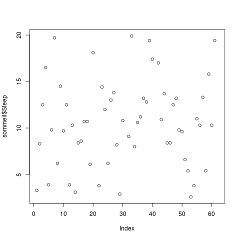
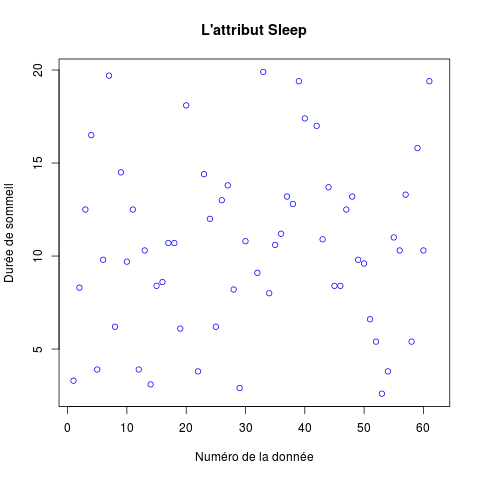
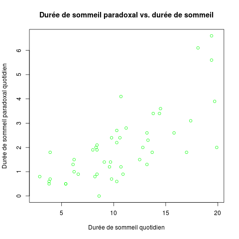
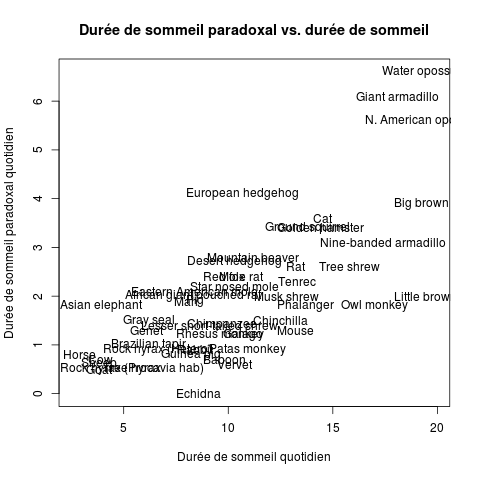
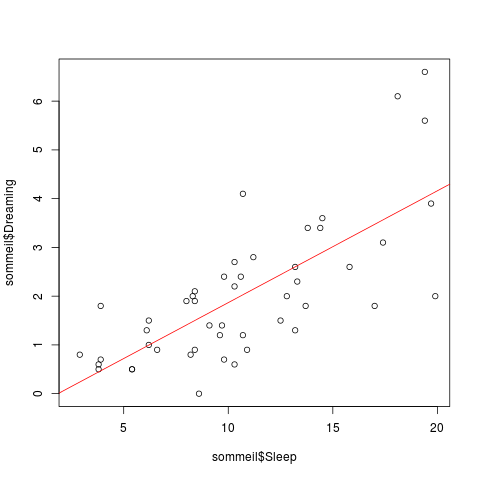
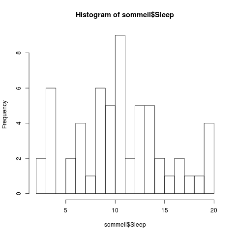
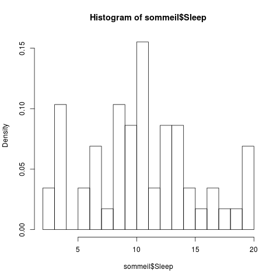
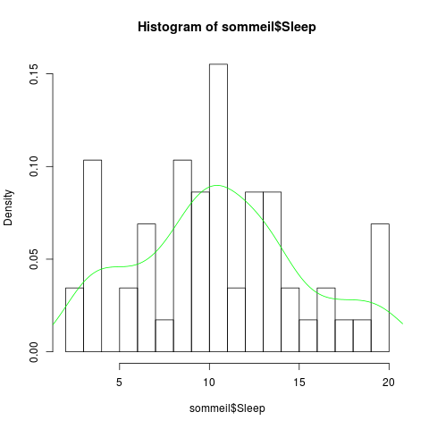
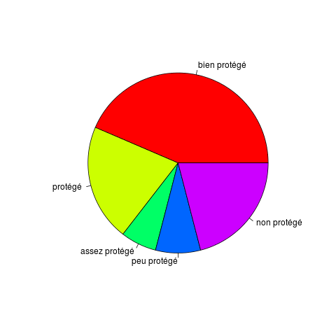
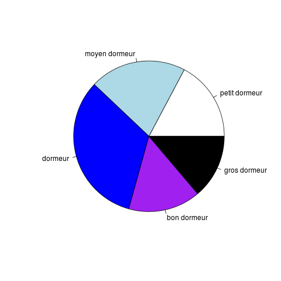

Pour celles et ceux qui sont en avance, je vous laisse chercher comment générer les graphiques qui suivent (à l'identique). On travaille sur le jeu de données sommeil vu précédemment.
En guise d'aide pour vous lancer : utiliser la commande plot() pour les premiers graphiques. Ensuite cherchez, utilisez l'aide, ...
Faites le graphique suivant de l'attribut Sleep.
Ajoutez-y couleur et légendes.
Faites le graphique suivant de l'attribut Dreaming en fonction de Sleep.
La même chose en indiquant les noms des espèces à la place des cercles.
La même chose avec la droite de régression.
L'histogramme de l'attribut Sleep pour visualiser la répartition de ses valeurs dans le jeu de données.
La même chose sauf que l'on indique des proportions et non plus des effectifs (en ordonnées).
La même chose à laquelle on ajoute une estimation de la densité.
Le camembert, quoique populaire, est une mauvaise manière de représenter des proportions. Néanmoins, générez le camembert suivant pour l'attribut Sleep.exposure.
Même chose pour Sleep.
